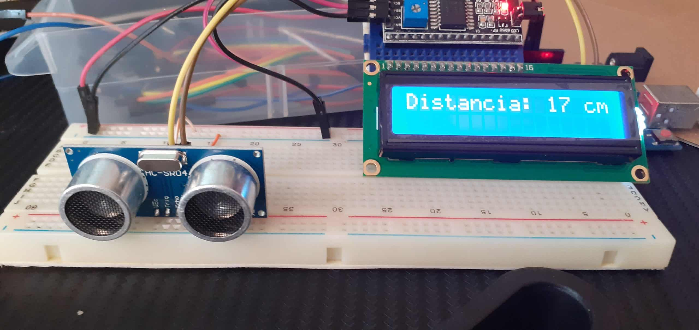
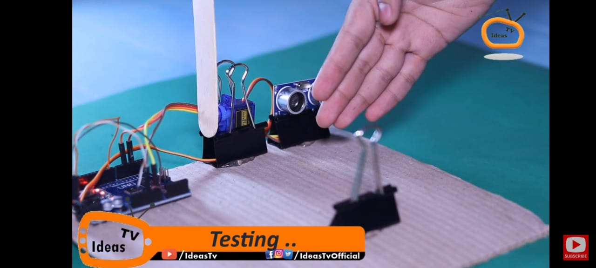
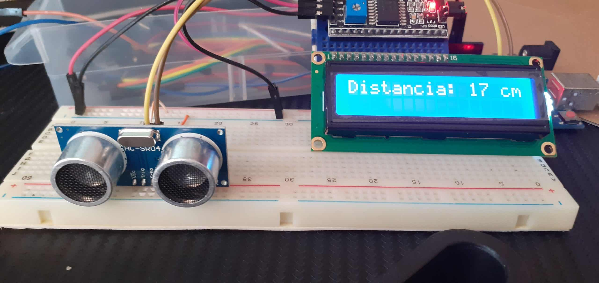
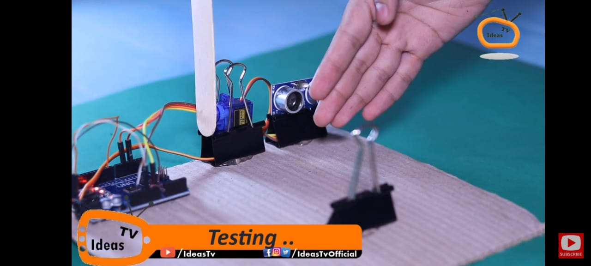

En el HC-SR04, el emisor (TRIGGER) emitirá ultrasonidos y cuando reboten en un objeto u obstáculo que se encuentre en el camino serán captados por el receptor (ECHO). El circuito se encargará de hacer los cálculos necesarios de ese eco para determinar la distancia. Esto también te puede ser familiar si conoces el sistema que usan algunos animales como los delfines, ballenas o murciélagos para localizar obstáculos, presas, etc.


El sensor HC-SR04 tiene cuatro pines: VCC (alimentación positiva, 5V), Trigger (pin de disparo que emite un pulso ultrasónico para iniciar la medición), Echo (pin de recepción que detecta el eco de la señal y permite calcular la distancia), y GND (tierra). La distancia se calcula midiendo el tiempo de vuelo del pulso ultrasónico reflejado.
El "pin VCC" del HC-SR04 se conecta a 5V del ESP32 y el "Pin GND" a GND del ESP32 para alimentar el sensor. El "Pin Trig" se conecta a un pin GPIO del ESP32 configurado como salida (Output), y el "Pin Echo" se conecta a otro pin GPIO configurado como entrada (Input). El "Pin Trig" emite un pulso para activar el sensor, mientras que el pin Echo recibe el pulso reflejado, que se usa para calcular la distancia. Es importante usar un divisor de tensión entre el pin Echo y el GPIO del ESP32, ya que Echo emite 5V y el ESP32 usa 3.3V.
 


